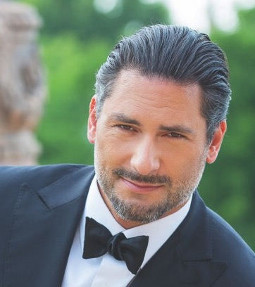

#11189 Colette

 IMDB-Wertung: 6.8 / 10
IMDB-Wertung: 6.8 / 10  Tomatometer: 87
Tomatometer: 87  Metascore: 74
Metascore: 74 
Als Sidonie-Gabrielle Colette den erfolgreichen Pariser Autoren Willy heiratet, ändert sich ihr Leben schlagartig: Sie zieht aus dem ländlichen Frankreich ins turbulente Paris und wird Teil der intellektuellen und kulturellen Elite. Willy, der von einer Schreibblockade geplagt ist, überzeugt seine junge Frau für ihn als Ghostwriter zu arbeiten. In ihrem Debütroman erzählt Colette die Geschichte einer selbstbewussten, jungen Frau namens Claudine. Ein halb-autobiografischer Roman, der unter Willys Namen zum Bestseller wird und ihm Reichtum und Ruhm verschafft. Schnell entstehen weitere Claudine-Bestseller – geschrieben von Colette – und schließlich eine ganze Markenwelt. Nach und nach beginnt Colette den Kampf darum, gesellschaftliche Zwänge zu überwinden und sich als wahre Autorin der erfolgreichen Bücher offenbaren zu können, um ihre Werke für sich zu beanspruchen.
Jahr: 2018
Dauer: 111 Minuten
FSK: 6
Land: England Studio: DCM Film DistributionTonspuren: DTS - ,
Untertitel: Deutsch,
Auflösung: 1080p (1920x804) Größe: 7843 MB
Genre: Drama, Geschichte, Biographie
Regisseur: Wash Westmoreland
Drehbuch: Richard Glatzer, Wash Westmoreland, Rebecca Lenkiewicz, Richard Glatzer
Soundtrack: Thomas Adès
Darsteller:
 Keira Knightley als Colette
Keira Knightley als Colette Fiona Shaw als Sido
Fiona Shaw als Sido Dominic West als Willy
Dominic West als Willy Robert Pugh als Jules
Robert Pugh als Jules- Sloan Thompson als Matilde
- Arabella Weir als Mme. de Caillavet
 Máté Haumann als Count Muffat
Máté Haumann als Count Muffat Ray Panthaki als Veber
Ray Panthaki als Veber Al Weaver als Schwob
Al Weaver als Schwob- Dickie Beau als Wague
- Janine Harouni als Jeanne de Caillavet
- Jake Graf als Gaston de Caillavet
- Rebecca Root als Rachilde
 Julian Wadham als Ollendorff
Julian Wadham als Ollendorff- Eleanor Tomlinson als Georgie Raoul-Duval
 Karen Gagnon als Aspiring Actress
Karen Gagnon als Aspiring Actress- Alexandra Szucs als Second Actress
- Aiysha Hart als Polaire
- Denise Gough als Missy
- Johnny K. Palmer als Paul Héon
- Shannon Tarbet als Meg
- Dorcas Coppin als Young Claudine
- Roderick Hill als Theatre Manager
-  Attila C. Arpa als Heckler
- Peter Schueller als Reporter
- Caroline Boulton als Flossy
- Izzy Bayley-King als Polka Dancer (uncredited)
- Balázs Csémy als Posh Heckler (uncredited)
- Karl Farrer als Hero Polka Dancer (uncredited)
- Caroline Garnell als Wedding Guest & Polka Dancer (uncredited)
 Masayoshi Haneda als Baptiste (uncredited)
Masayoshi Haneda als Baptiste (uncredited)- Virág Bárány als Lotte Kinceler
- Kylie Watt als Opera Singer
- Joe Geary als Bailiff
- Polina Litvak als Lily
- István Gyurity als Waiter
- Katinka Egres als Hungarian Countess
- Mark Griffith als Photographer
- Nathanaël Bez als Sweetheart
- David Shorter als Passer-By
- Alexis Latham als Second Heckler
- Nick Scudamore als Priest
- Anita Gera als Secret Lover
- Life als Toby Chien
- John Kinory als Funeral and Wedding Guest (uncredited)
Datei: X:\2018(A-F)\Colette (2018, FSK6, 1920x804).mkv seit 10.05.2019
Festplatte: HD 2017(A-Z)-2018(A-F)
 Es gibt insgesamt 151 Filme in der Gruppe '2018(A-F)'
Es gibt insgesamt 151 Filme in der Gruppe '2018(A-F)'